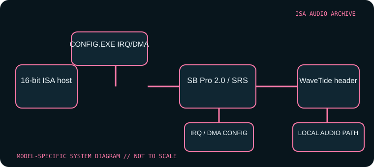

[ INDIVIDUAL COMPONENT // SOUND HARDWARE ]
Aztech Sound Galaxy Pro 16 II (AZT-2316R)
This entry covers the Sound Galaxy Pro 16 II AZT-2316R board identity, not every Pro 16, Pro 16 II, or OEM clone. Board revision affects CD-ROM headers and options; the DOS CONFIG utility is specific and should not be replaced with another Aztech family’s HWSET tool.

Model-specific specifications
| Catalog identity | Aztech Sound Galaxy Pro 16 II, AZT-2316R; record board revision and chipset (including AZT-1605 where present). |
|---|---|
| Bus / host | 16-bit ISA PC-compatible system; legacy DOS configuration and period Windows installation are needed for intended operation. |
| Sound engine / I/O | Sound Blaster Pro 2.0-compatible stereo 8-bit audio with SRS positional processing. The game/MIDI port is MPU-401 compatible. The card has a physical base-I/O jumper (220h–22Fh default, 240h–24Fh alternate) and wavetable MIDI base jumper (330h default, 300h alternate); its WaveTide header is for the matching Aztech daughterboard, not an arbitrary module. |
| IRQ | Assigned through the Pro 16 II CONFIG.EXE setup path; no universal IRQ default is specified in the board-family reference. Verify the selected value in utility/driver state and resolve conflicts rather than assuming a Sound Blaster default. |
| DMA | Assigned using the same model-specific configuration utility; record the selected DMA channel(s) and role reported by the driver. The Pro 16 II supports auto-init DMA; do not apply settings from generic AZT HWSET utilities. |
| Software / host compatibility | The DOSDays preservation notes document configuration from the Windows installer, which installs CONFIG.EXE for later DOS adjustment. SB Pro 2.0 games and MPU-401-aware MIDI software are targets; chipset revision can affect utilities such as SoftMPU. |
| Connections / power | 16-bit ISA slot; game/MIDI connector, wavetable header, and optional CD-ROM interface vary by board. Inspect the revision before wiring internal audio or CD-ROM signals. |
Compatibility & configuration notes
Resource setup is a major model-specific caveat. The Pro 16 II uses its CONFIG.EXE utility; a typical base address or SB-family IRQ value should not be substituted for a configuration readback. DOSDays notes that the Windows installer provides the utility folder, the 330h MIDI default can conflict with other devices, and older Aztech HWSET software is not interchangeable. The AZT-1605 chipset is also flagged as having SoftMPU limitations. Preserve the configuration utility, installer and saved resource selection with the card.
- Photograph model/revision markings, resource switches or jumpers, connector panel and installed options before installation.
- For every configured IRQ, DMA channel, I/O address and driver, record the actual setting used by the host; do not rely on a family name or an assumed default.
- Power down and unplug the host before fitting or removing an ISA card; retain period setup tools and documentation with the specimen.
Sources & archival documentation
- DOS Days — Aztech Sound Galaxy Pro 16 IIDetailed Pro 16 II configuration, compatibility and board revision notes.
- Stason.org — Sound Galaxy Pro 16 II settings and configurationCard-specific hardware configuration table for base I/O, wavetable MIDI port and connector options.
Where related model variants exist, the original manual and the physical card’s complete part/revision marking take precedence over generalized family summaries.